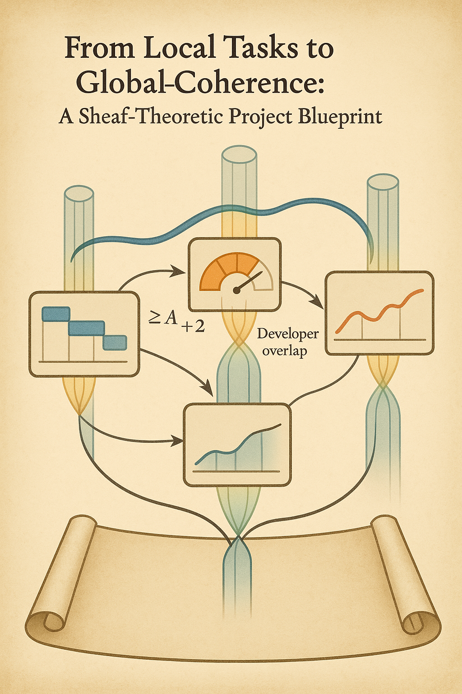
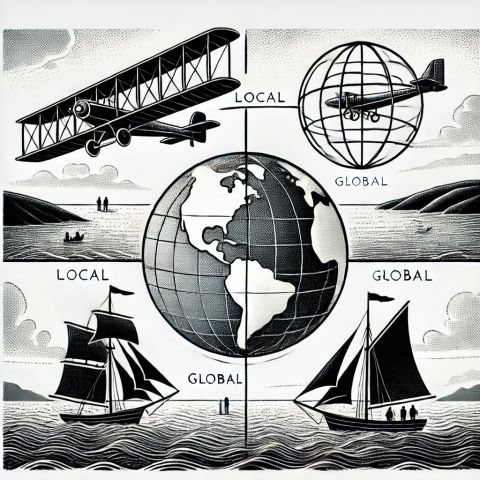

The essays
Each page keeps a clear example in view. Together they form a workbench, not a claim that one settled formalism already fits every project problem.
Scope coherence
A visual experiment in joining package-level scope facts across shared boundaries.
Open essay → Essay 02 · directionProject director view
A more sober account of what a compatibility layer can and cannot tell a director.
Open essay → Essay 03 · worked scenarioThe Tangled Triangle
Five local constraint views meet on one awkward site. Explore whether any candidate location satisfies all of them, and see exactly which interface removes the global solution.
Explore the triangle → Essay 04 · primerA director’s primer
A compact, non-technical introduction to local facts, overlaps and gluing.
Open essay → Essay 05 · controlsInfrastructure PMO
An early domain sketch, retained as a fictional concept and marked for validation.
Open essay → Essay 06 · code demoPatch validator
A small deterministic checker over declared packages, overlaps and thresholds.
Run checker →
The blueprint mnemonic
What this image helps us remember—and what it does not establish.

The navigation mnemonic
A second, separate image for scale, movement and viewpoint.